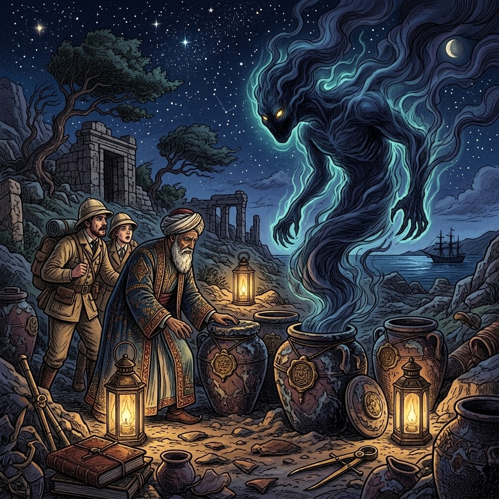

The Sixteen Sealed Jars

Imam Ibn Kathir (may Allah have mercy on him) said:
Al-Hafiz Ibn ‘Asakir narrated that when Musa ibn Nusayr arrived in Damascus during the caliphate of al-Walid, ‘Umar ibn ‘Abd al-‘Aziz asked him about the most astonishing thing he had witnessed during his expeditions at sea.
He replied, “Once, we reached an uninhabited island where we found sixteen jars. Each of them was sealed with the seal of Sulayman ibn Dawud (peace be upon him).”
Ibn Nusayr said, “I ordered four of them to be brought out. Then I ordered one of them to be pierced. Suddenly, a devil (evil jinn) emerged from it, shaking his head, and said, ‘By the One who honored you with prophethood, after this I shall never again cause corruption and disorder on the earth.’”
Ibn Nusayr continued, “Then that devil looked around and said, ‘What is this? I do not see the splendor of Sulayman or his kingdom.’ Then he vanished into the earth.”
Ibn Nusayr said, “After that, I ordered the remaining three jars to be returned to their original place, and they were returned.”